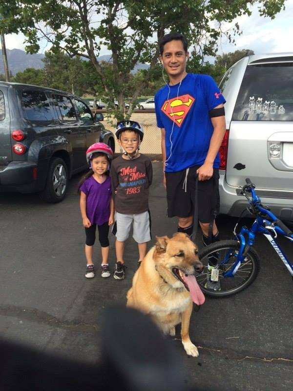
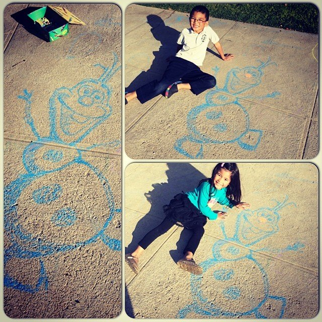

About Me
I am a Front End Web Developer / Jr Full Stack Developer with a background in marketing events technology. I spent my career using web applications to make businesses profit. Now I can apply the lessons learned from WDI, to create these web applications.
His career in web started with a web design company as a web production artist. Most of his work completed here was graphics and html. After leaving that company he found himself at an ecommerce company that was short lived upon arrival as the company ran into some financial hardship.
Following his first two jobs, Edwin landed a position doing web registration with the events marketing team. He worked on many projects from web landing pages to evaluations, email communications as well as designing print and design materials for events, tradeshows and conferences.
As a husband and father of two wonderful children, Edwin is dedicated to his family. He enjoys spending time with his family especially on vacations and trips that involve some sort of Disney adventure having had season passes to the happiest place on earth for the past several years.
Edwin is active in a variety of sports. Basketball and volleyball are some of the major team sports he likes to participate in. If he's not doing those he can be found biking on the road or taking the scenic route up and around the mountain. And if that's not enough cardio, he takes off on foot and runs several miles hoping to one day be triumphant at a full marathon.
When he's not involved in his own sports, Edwin will be coaching his son's basketball, soccer and baseball team on weekends. Although he hasn't coached a team to a championship, he still continues to encourage and push the little tykes to play and do their best.
Using some artistic skill, Edwin enjoys doing some simple drawings as a hobby just for fun. Much of the drawings are copyings of Disney characters that gives the kids a bright smile.